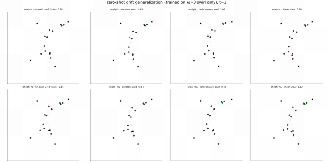
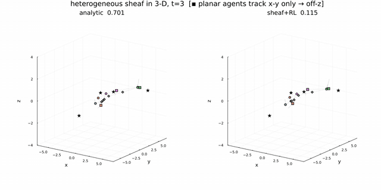
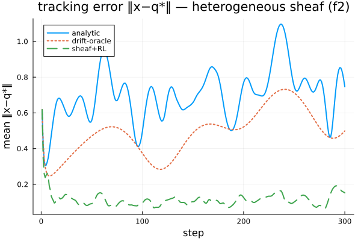

Generalization and genuinely heterogeneous sheaves
The architecture's payoff is that the same decentralized $u(x, b^\star)$ policy handles coordination it never saw during training — both unseen disturbances and unseen sheaf structure. Demonstration 6 holds the sheaf fixed and varies the drift; Demonstration 7 holds the learning fixed and makes the sheaf genuinely heterogeneous.
Demonstration 6: zero-shot generalization to unseen drifts
Setup. The policy from Demonstration 5 — trained only on the $\omega=3$ sinusoidal swirl — is evaluated with no retraining on drift fields of entirely different form: other temporal frequencies, a constant wind, a non-sinusoidal $\tanh$ "square" swirl, a multi-frequency field, and a linear shear $f = A\,q$.
Result. It tracks every one at the drift-oracle level despite never having seen them (mean $\lVert x-q^\star\rVert$ over 25 held-out scenarios, same seeds across controllers):
| drift field (only $\omega=3$ sinusoid seen in training) | analytic | drift-oracle | sheaf+RL |
|---|---|---|---|
| sin swirl $\omega=3$ (train) | 0.64 | 0.38 | 0.13 |
| sin swirl $\omega=1$ | 0.86 | 0.38 | 0.14 |
| sin swirl $\omega=6$ | 0.50 | 0.38 | 0.12 |
| constant wind | 1.63 | 0.38 | 0.14 |
| $\tanh$ "square" swirl | 2.60 | 0.38 | 0.36 |
| multi-frequency swirl | 0.59 | 0.38 | 0.11 |
| linear shear ($f = A\,q$) | 0.55 | 0.38 | 0.10 |
Why it generalizes. The history window encodes a field-agnostic drift estimate, $f \approx (x_{t+1}-x_t)/\mathrm{d}t - u_t$, which holds for any drift; the policy learned to use the history, not to memorize the training sinusoid. The hardest case is the $\tanh$ swirl (a larger, sharper sustained push), where tracking is looser ($0.36$) but still matches the oracle. The remaining step toward a formal robustness claim is to train on a distribution of drifts, so there is no single field to overfit.
The 2×4 view — rows are the analytic law (top) and sheaf + learned residual (bottom), columns are four of the drift fields — shows the analytic agents scattering while the learned policy holds formation on all four:

Demonstration 7: a genuinely heterogeneous sheaf
Why this matters. Demonstrations 4–5 used identity restriction maps — for which the sheaf Laplacian is just a weighted consensus graph, and the cellular-sheaf machinery is not strictly necessary. The construction earns its name only when the restriction maps are heterogeneous. Here the same 13-agent / 4-target graph carries:
- rotation restriction maps $R_z(\theta_e)$ on every consensus edge — neighbours agree in rotated frames (a per-edge angle); and
- projection restriction maps $P:\mathbb R^{3}\to\mathbb R^{2}$ on three agents' pinning (drawn as squares) — these agents track only the x-y of their target, not its altitude.
The sheaf Laplacian is now genuinely non-consensus, and the harmonic extension must reconcile rotated agreements and projected (subspace) tracking — something a plain consensus graph cannot express. (This is exactly how mixed-dimension agents are encoded: a common ambient stalk with projection/rotation maps, rather than literally different-length state vectors.)
Result (under unknown drift). sheaf+RL 0.12 vs analytic 0.70 (drift-oracle 0.49) — the same magnitudes as the homogeneous case.
The heterogeneity is only visible in 3-D (a top-down view would project it away): the square agents track only their target's x-y, so they settle at a consensus-determined altitude, off their target's z — while the circle (full-ℝ³) agents sit on their targets. Left is the analytic law, right is sheaf + learned residual:


Why the learned policy beats the analytic law — and why it's the same reason as before. The crucial point is that nothing in the policy changed. The heterogeneity lives entirely in Layer 1: the rotation and projection maps alter how $b^\star_i$ is computed, but the policy still just receives $(x_i, b^\star_i)$ and tracks. So the learned residual beats the analytic law for exactly the reasons of Demonstrations 4–5:
- the analytic law is the same low-gain, stability-limited feedback (a fixed linear gain capped by $\mathrm{d}t\,k\,\lambda_{\max} < 2$), now chasing a reference twisted by the rotations and moving with the fast targets — so it lags even more (error swinging 0.4–1.1);
- it is drift-blind, rejecting the disturbance only reactively;
- the learned residual reaches a higher effective gain stably (it is nonlinear, not a fixed linear gain) and infers and cancels the drift from its history window — holding ~0.12 regardless of whether the coordination is identity, rotation, or projection.
This is the architecture's payoff made concrete: the coordination can be an arbitrary cellular sheaf, and the same decentralized $u(x, b^\star)$ policy handles it — the learning never sees the restriction maps.